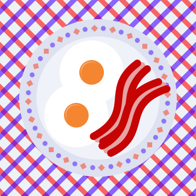

TEAM BACON
Love bacon? That's pretty much an obvious answer, because almost all (not including vegetarians) people love it. However, for those of you who are allergic to bacon (is that even possible?) or vegetarians we strongly recommend you not try the meat-free kind. It is really not worth all of your valuable time.
Welcome to the official homepage of Team Bacon Ltd! Team Bacon was founded by Caleb Rivera, Landon Fairchild, and Chip Thrasher on May 9th, 2014 and is a non-profit organization dedicated to promoting the consumption and love of bacon.
THE BACON NEWSLETTER
Team Bacon is happy to announce that we are planning a newsletter (released every so often, no particular periods) that will include recipes, news, ideas, and more! The first periodical is currently in production, and won't be released until maybe Christmas.THE STORY of TEAM BACON
I'm sure, if you're a student at Bradford Academy, that you have probably heard of Team Bacon. That is even more likely, if you were here last school year (2013-2014). If you haven't, however, Team Bacon is a sort of "club" for only people who love bacon. If you're a vegetarian, but would still love bacon, you can join. However, recently, Team Bacon has been narrowed down to the 3 founding fathers, Taste, Sizzle, and Texture. But don't be disappointed! There is still something called "External Team Bacon." Anyone who loves bacon may join. If you are a student at Bradford Academy, then you may consider yourself on a higher level of "External Team Bacon." If we (the founding fathers) have told you that you are on a higher level, then you may consider yourself even higher than the students at Bradford who have joined. It's okay if you're not on the highest level. You are honored by the founding fathers even to be in External Team Bacon. After all, you do love bacon!! Anyone who loves bacon is honored by the founding fathers. Well, it all started on May 9th, 2014 at lunch, when it so happened (this was not planned out) that we, the three to-be founding fathers, were eating together. One of us (I can't remember which) had bacon, and sequentially, we all commented extremely positively on the presence of that substance. We decided on having this club between the three of us centered on bacon. Eventually, someone overheard this discussion (it was when we were WALKING down like sensible lunatics) and asked, "Hey, can I do it too?" The three founding fathers had a bit of discussion. Eventually, we came up with "Yes!" and he was our first member. On the 17th of May, 2014, 8 days later, I, Texture, decided we needed a database to store all of our ideas. Yes, it was a website. I bought "baconteam.com" and it is now the official Team Bacon website that you are probably surfing out of curiosity or in noticing Texture's custom email signature. Apparently, Becket Newsome, who unfortunately thinks Sausage (which is good) is better than Bacon, (which is better!) decided to make something to "Rise up against" Team Bacon - we later ended up merging/uniting the two teams, despite each's skepticism of the thoughts of the other on bacon/sausage. It is called Team Sausage. It was founded...when? I need to rack my brains. Actually, I can't remember very well. Let me think... It was founded...when? Turns out it was May 19, 2014. ...BACON IN GENERAL
Bacon in general is good. Things relating to bacon, in general, are also good, such as the following:"Bacon and Eggs" by Tom Bartul
"Nyan Bacon Cat" by Chip Thrasher
Francis Bacon - also good.
Read about Francis Bacon...